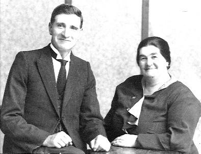

|
Stephanus Rudolf Kruger en sy eggenote Petronella Wilhelmina Scharlotina, gebore Bester. Ouers van Jannetta Sophia Hendrina Susanna Kruger eggenote van b7.c8.d8.e3. Leonard Henning
Beskou lys van mense op foto
|
 |
Stephanus Rudolf Kruger * 16-8-1887 en sy vrou Petronella Wilhelmina Scharlotina Bester * 1-7-1887 (ouers van Jannetta Sophia Hendriena Susanna Henning (gebore Kruger, b7.c8.d8.e3.)
Beskou lys van mense op foto